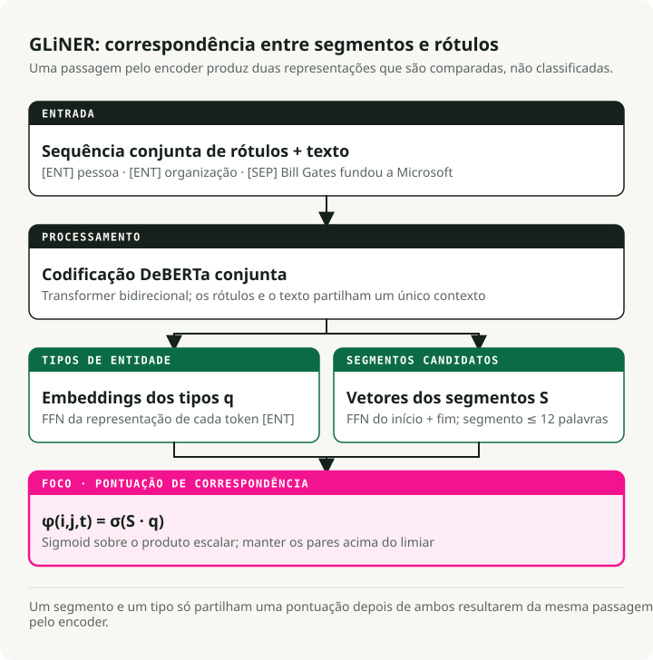
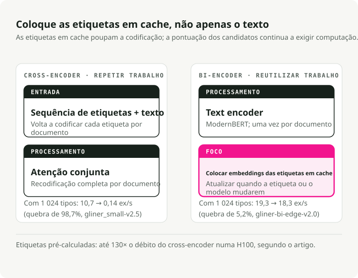
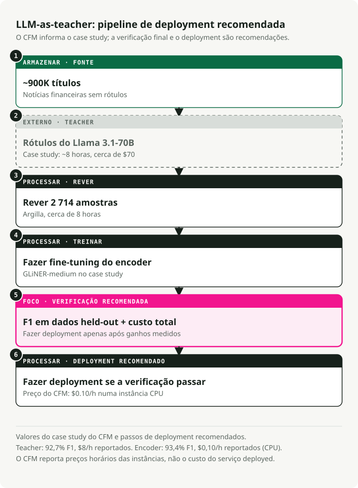
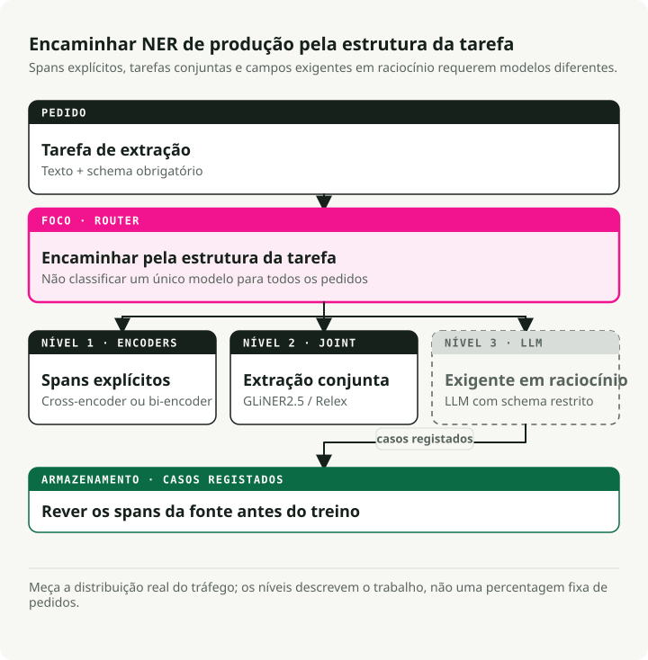

Tradução automática
Este artigo foi traduzido automaticamente a partir da versão original em inglês.
O Guia Definitivo para NER em 2026: Encoders, LLMs e a Arquitetura de Produção em 3 Camadas
Há dois anos, escolher uma abordagem de NER significava escolher entre velocidade (modelos encoder) e precisão (LLMs). Esse trade-off desapareceu. Um GLiNER com 300M parâmetros iguala a precisão zero-shot de um UniNER com 13B enquanto corre 100x mais depressa. Uma variante bi-encoder mais recente escala para milhões de tipos de entidades com uma vantagem de throughput de 130x face ao cross-encoder original. O padrão de produção que emergiu: usar LLMs para rotular dados, fazer fine-tuning de encoders compactos e fazer deploy com ONNX ou Rust.
Construí o repositório complementar e fiz benchmarks de todas as abordagens principais. Os encoders ganharam o mercado de NER em produção. Os LLMs continuam a ser essenciais, mas como geradores de dados de treino e não como motores de inferência. Este guia cobre os artigos, benchmarks e padrões de deploy por trás dessa mudança.
Repositório complementar: ner-field-guide — demos executáveis para GLiNER, exportação para ONNX, pipeline LLM-as-teacher e extração estruturada com Instructor.
TL;DR: Já não precisa de construir modelos de NER de raiz. Para extração zero-shot, GLiNER em CPU via ONNX supera até os LLMs mais recentes a custo quase nulo. Para tarefas específicas de domínio, o pipeline LLM-as-teacher (LLM rotula → revisão → fine-tuning) produz encoders que atingem 90-93%+ de F1. Para casos que exigem raciocínio, use Instructor ou Outlines com uma API de LLM — mas conte com \$2+/1K docs. A arquitetura em 3 camadas combina os três.
Porque o NER é Mais Importante Agora: Agents, RAG e Document Intelligence
NER continua a significar o mesmo: encontrar spans nomeados no texto e classificá-los. O que mudou foi onde aparece. Antes era o último passo de um pipeline de NLP, a peça utilitária discreta sobre a qual ninguém escrevia posts. Agora é um bloco de construção dentro de sistemas RAG, loops de agents e plataformas de processamento documental. É por isso que a vaga de investigação em NER de 2024-2026 importa para lá dos benchmarks académicos.
RAG: Melhor Retrieval Através da Extração de Entidades
RAG standard — dividir texto em chunks, gerar embeddings, fazer retrieval por similaridade e esperar pelo melhor — falha quando os utilizadores perguntam por entidades específicas. Se alguém perguntar "o que disse a Anthropic sobre model safety no Q4 2024?", o sistema precisa de reconhecer "Anthropic" e "Q4 2024" como filtros, não apenas depender da similaridade de embeddings.
Durante a indexação, extrai entidades de cada chunk e armazena-as como metadata: {"organizations": ["Anthropic"], "dates": ["Q4 2024"], ...}. Isto permite filtrar por entidade antes de correr a pesquisa vetorial. Knowledge graph RAG (GraphRAG, LlamaIndex property graphs) vai mais longe: NER mais extração de relações constroem um grafo que consegue responder a perguntas multi-hop que embeddings planos não conseguem.
Durante query time, as entidades extraídas da pergunta do utilizador orientam o routing. Uma pergunta que menciona o nome de uma empresa vai para um índice financeiro; uma que menciona nomes de fármacos vai para uma base de conhecimento clínica. O GLiNER funciona bem aqui porque as entidades na query são imprevisíveis — não pode treinar de novo para cada novo tipo de entidade que os utilizadores possam pedir.
AI Agents: Transformar Texto em Factos Estruturados
Os agents recebem texto não estruturado — páginas web, respostas de API, mensagens de utilizadores — e precisam de agir sobre ele. O NER converte esse texto em factos estruturados que o agent pode usar para raciocinar, armazenar ou passar a tools.
Há dois pontos em que isto mais importa.
O primeiro é o tool routing. Quando um utilizador diz "schedule a meeting with Sarah Chen from Accenture on Thursday at 2pm", o agent precisa de extrair PERSON: Sarah Chen, ORGANIZATION: Accenture e DATETIME: Thursday 2pm antes de chamar a calendar API. Um modelo encoder NER faz isto em menos de 10ms. Um LLM acrescenta 1-2 segundos por chamada, e isso acumula-se em workflows multi-step até o seu agent "instantâneo" parecer estar a correr em cima de um curso de filosofia.
O segundo é o tracking de entidades ao longo das conversas. Os sistemas de memória de agents precisam de saber que "Sarah" no turno 3 e "Ms. Chen" no turno 12 são a mesma pessoa. O NER identifica os spans; o entity linking resolve-os para o mesmo ID.
A restrição em ambos os casos é a latência. Uma chamada NER de 200ms dentro de uma cadeia de 10 passos de agent acrescenta 2 segundos de atraso percebido. É por isso que os modelos encoder, e não a extração baseada em LLM, são a escolha certa para trabalho com entidades dentro de loops de agents.
Document Intelligence: De Imagens para Dados Estruturados
OCR transforma imagens em texto. NER transforma texto em campos estruturados. Juntos, alimentam a digitalização documental à escala.
O pipeline standard: correr OCR (Tesseract, Azure Document Intelligence, AWS Textract) para obter texto e bounding boxes, depois correr NER para extrair campos estruturados — invoice_number, vendor_name, line_items, total, due_date — a partir do que antes era um JPEG de uma fatura em papel. A mesma abordagem funciona para contratos, registos médicos e filings regulatórios.
As plataformas modernas combinam três passos: compreensão de layout (isto é um header ou uma célula de tabela?), extração de entidades (que tipo de texto é este?) e extração de relações (que valores pertencem em conjunto?). O GLiNER 2 trata dos três numa única forward pass; uma única chamada ao modelo pode devolver {vendor: "Acme Corp", amount: "\$4,200", due_date: "2026-04-15"} a partir de uma fatura.
É aqui que o custo importa. Uma empresa de contabilidade de média dimensão processa dezenas de milhares de faturas por mês. Encaminhar cada uma por um LLM, mesmo um modelo eficiente em custo como GPT-5.4 Nano, custa centenas de dólares por dia. Um GLiNER com fine-tuning em CPU custa cêntimos. O seu CFO vai notar a diferença. O caminho é: anotar 500 faturas de exemplo com um LLM, fazer fine-tuning do GLiNER sobre os resultados e fazer deploy em CPU a \$0.10/hora.
Deteção de PII e Guardrails para LLMs
Regulamentos de privacidade (GDPR, HIPAA, CCPA) exigem encontrar dados pessoais antes de estes chegarem a sistemas downstream. Em deployments com LLMs, isso significa analisar inputs antes de chegarem ao modelo e outputs antes de chegarem ao utilizador.
O NER trata disto diretamente. Modelos de de-identification encontram spans PERSON, SSN, PHONE, EMAIL, ADDRESS e ou os redigem ou os substituem por equivalentes falsos. Os modelos clínicos da John Snow Labs atingem 96% F1 na deteção de PHI (vs. Azure 91%, AWS 83%, GPT-4o 79%) enquanto processam mais de 100K notas clínicas por dia.
Para guardrails de LLM, o NER funciona como uma camada de pré-screening: analisa o input do utilizador à procura de PII antes de o enviar para uma API externa, e depois bloqueia ou anonimiza. Isto é mais rápido e mais simples do que pedir ao LLM para se auto-moderar. O GLiNER é especialmente útil aqui porque as categorias de PII variam consoante a jurisdição. Pode adicionar novos tipos de entidade como "informação genética" ao abrigo de um novo regulamento sem voltar a treinar.
O GLiNER Reescreve a Economia do NER com um Modelo de 300M Parâmetros
O GLiNER (NAACL 2024, Zaratiana et al.) tornou o NER baseado em encoders competitivo com LLMs por uma fração do custo. Em vez de tratar NER como sequence labeling ou geração de texto, o GLiNER trata-o como um problema de matching: pontuar cada span candidato no texto (cada sequência contígua de palavras como "Bill Gates" ou "Microsoft") contra cada label de tipo de entidade e depois manter os pares com pontuação elevada.
O modelo recebe labels de tipos de entidade e texto de entrada como uma única sequência: [ENT] person [ENT] organization [ENT] date [SEP] Bill Gates founded Microsoft.... Um transformer bidirecional (DeBERTa-v3) codifica tudo em conjunto.
A partir do output, o modelo constrói dois conjuntos de representações: um para tipos de entidade (a partir de posições de token [ENT]) e outro para spans de texto (combinando vetores de token de início e fim através de uma pequena FFN). Um dot product entre uma representação de span e uma representação de tipo de entidade produz uma pontuação.
Aplicando sigmoid, obtém-se a probabilidade de o span do token \(i\) ao token \(j\) pertencer ao tipo de entidade \(t\): \(\\phi(i, j, t) = \\sigma(S_{ij}^T \\cdot q_t)\), onde \(S_{ij}\) é o vetor de span produzido pela FFN e \(q_t\) é o embedding do tipo de entidade do token correspondente [ENT] (Zaratiana et al., 2024, Eq. 1). Os spans são limitados a 12 tokens para manter a velocidade.

Na prática, isto significa que qualquer descrição em linguagem natural funciona como label em tempo de inferência. Sem retraining. Passa os tipos de entidade que quiser ("person", "adverse drug reaction", "financial instrument"), e o modelo pontua spans contra eles. Estão disponíveis três tamanhos: GLiNER-S (50M params), GLiNER-M (90M) e GLiNER-L (300M). Os dados de treino vêm do dataset Pile-NER: 44.889 passagens com 240K entity spans em 13K tipos de entidade, todos rotulados pelo ChatGPT. Treinar o GLiNER-L demora cerca de 4 horas numa única A100 (Zaratiana et al., 2024).
Resultados de Benchmark
Resultados zero-shot de Zaratiana et al. (2024), Tabelas 1 e 2:
| Model | Params | CrossNER F1 | Avg (20 datasets) |
|---|---|---|---|
| GLiNER-L | 300M | 60.9% | 47.8% |
| GoLLIE | 7B | 58.0% | -- |
| UniNER-13B | 13B | 55.6% | -- |
| GLiNER-M | 90M | 55.4% | -- |
| UniNER-7B | 7B | 53.7% | 45.7% |
| GLiNER-S | 50M | 52.7% | -- |
| ChatGPT (GPT-3.5) | -- | 47.5% | 36.5% |
O GLiNER-M com 90M parâmetros quase iguala o UniNER-13B (55.4% vs 55.6% F1) sendo 140x mais pequeno. Até o pequeno GLiNER-S de 50M supera o ChatGPT (GPT-3.5) em 5 pontos de F1. A variante multilingue — treinada apenas com dados em inglês — supera o ChatGPT em 8 de 10 línguas não inglesas (Zaratiana et al., 2024). Nota: LLMs mais recentes (GPT-5.4, Claude 4.6) provavelmente terão pontuações mais altas nestes benchmarks, mas o fosso de custo só aumentou — estes modelos continuam a ser ordens de grandeza mais caros do que um encoder de 90M em CPU.
O ecossistema é grande: 280+ modelos compatíveis com GLiNER no HuggingFace, ~350.000 downloads PyPI por mês, ~2.800 estrelas no GitHub. As variantes cobrem texto biomédico, deteção de PII, notícias e suporte multilingue.
De quickstart.py:
from gliner import GLiNER
model = GLiNER.from_pretrained("urchade/gliner_medium-v2.1")
text = "Bill Gates founded Microsoft on April 4, 1975."
labels = ["person", "organization", "date"]
entities = model.predict_entities(text, labels, threshold=0.5)
for entity in entities:
print(f" {entity['text']} => {entity['label']} ({entity['score']:.3f})")
# Bill Gates => person (0.987)
# Microsoft => organization (0.991)
# April 4, 1975 => date (0.974)
Como o GLiNER se Compara ao spaCy
Qualquer guia sobre NER estaria incompleto sem o spaCy — ~21M downloads por mês, a barata das bibliotecas de NLP (dito com carinho — sobrevive a tudo). Mas resolve um problema diferente do GLiNER.
Os pipelines do spaCy (en_core_web_sm, en_core_web_trf) fazem closed-vocabulary NER: um conjunto fixo de tipos de entidade (PERSON, ORG, GPE, DATE, etc.) definido no momento do treino. Quer um novo tipo de entidade? Recolha dados anotados e volte a treinar. O en_core_web_trf com transformer atinge 89.8% F1 em OntoNotes 5.0, mas apenas para os seus 18 tipos predefinidos.
O GLiNER faz open-vocabulary NER: qualquer label funciona em tempo de inferência, sem necessidade de retraining. Isto torna-o a melhor escolha quando os tipos de entidade não são conhecidos à partida, mudam com frequência ou são específicos de domínio ("adverse drug reaction", "financial instrument", "threat indicator").
A minha recomendação: use spaCy para tipos de entidade standard em que os pipelines pré-treinados estão bem validados. Use GLiNER quando precisar de tipos flexíveis, zero-shot ou quando o pipeline tiver de se adaptar sem retraining. Funcionam bem em conjunto — o spaCy trata da tokenização e sentence splitting, o GLiNER trata da extração de entidades.
UniNER e NuNER: Até Que Ponto se Pode Reduzir?
UniNER (ICLR 2024, Zhou et al.) e NuNER (EMNLP 2024, Bogdanov et al.) destilam ambos anotações de LLMs em modelos de NER mais pequenos — mas discordam sobre quão pequeno se pode ir.
UniNER: O Caminho Maximalista
O UniNER faz fine-tuning de LLaMA-7B/13B em 44.889 pares NER (240K entidades, 13K tipos) gerados pelo ChatGPT. Para cada tipo de entidade, o modelo responde a "What describes [type] in the text?" e produz listas JSON. Um truque-chave de treino: frequency-based negative sampling aumenta o F1 de 31.5% para 53.4% (Zhou et al., 2024).
O UniNER-7B atinge 41.7% de zero-shot F1 em 43 datasets — superando os 34.9% do ChatGPT em 7 pontos. A variante de 13B chega a 43.4%, apenas mais 1.7 pontos por quase o dobro do compute (Zhou et al., 2024).
O problema em produção: como modelo autoregressivo 7B, o UniNER precisa de N forward passes para N tipos de entidade, exige 14GB+ de VRAM (ou seja, lá se vai o orçamento da GPU antes da hora de almoço) e tem uma licença restritiva CC BY-NC 4.0.
NuNER: O Caminho Minimalista
O NuNER parte de RoBERTa-base (125M parâmetros) e usa treino contrastivo com 4,38 milhões de anotações GPT-3.5 em 200K conceitos — custo total de anotação inferior a \$500. Depois do treino, o encoder de conceitos é descartado; o encoder de texto encaixa em qualquer pipeline standard de NER como substituto do RoBERTa (Bogdanov et al., 2024).
Os resultados: o NuNER supera o RoBERTa simples em 6-15 pontos de F1 em todos os tamanhos few-shot. Com apenas uma dúzia de exemplos por tipo de entidade, o NuNER iguala o UniNER-7B apesar de ser 56x mais pequeno (Bogdanov et al., 2024).
Ambos os artigos mostram a mesma coisa: destilar anotações de LLMs em modelos mais pequenos produz NER que supera o teacher. E não precisa de 7B parâmetros — 125M chegam quando há dados de fine-tuning disponíveis, com licença MIT e inferência adequada para CPU.
GLiNER 2: Um Modelo, Quatro Tarefas
O ecossistema original do GLiNER tinha um problema crescente: modelos separados para NER (GLiNER), relation extraction (GLiREL), classification (GLiClass) e RE ao nível do documento (GLiDRE) — cada um a precisar do seu próprio deployment, do seu próprio contentor Docker e da sua própria entrada na folha de cálculo "serviços em que rezamos para que não falhem". O GLiNER 2 (EMNLP 2025, Zaratiana et al.) funde os quatro num único modelo de 205M parâmetros com interface orientada por schema.
A arquitetura mantém o desenho cross-encoder, mas estende o contexto para 2.048 tokens (4x o original) e adiciona schemas declarativos para definir tarefas de extração. O treino usa 135.698 documentos reais anotados com GPT-4o mais 118.636 exemplos sintéticos (Zaratiana et al., 2025).
No CrossNER zero-shot, o GLiNER 2 obtém 0.590 F1 — perto dos 0.599 do GPT-4o no benchmark do artigo (meados de 2025). Modelos mais recentes como o GPT-5.4 provavelmente terão pontuações mais altas, mas por uma fração da velocidade e do custo do GLiNER 2. Em classification, atinge 0.72 de média em 7 benchmarks, superando o DeBERTa-v3-large (0.69). Em CPU, o GLiNER 2 corre classification em 130-208ms independentemente do número de labels. O DeBERTa escala linearmente: 1.714ms para 5 labels, 16.897ms para 50 (Zaratiana et al., 2025).
from gliner2 import GLiNER2
extractor = GLiNER2.from_pretrained("fastino/gliner2-base-v1")
# Multi-task composition in ONE forward pass
schema = (extractor.create_schema()
.entities({"person": "Names of people", "company": "Organization names"})
.classification("sentiment", ["positive", "negative", "neutral"])
.relations(["works_for", "founded", "located_in"])
.structure("product_info")
.field("name", dtype="str")
.field("price", dtype="str"))
results = extractor.extract(text, schema)
Um único deployment de modelo substitui quatro. Infraestrutura mais simples, precisão competitiva.
O Bi-Encoder: Escalar para NER com um Milhão de Labels
O GLiNER original codifica labels e texto em conjunto — o que cria um bottleneck. Mais tipos de entidade significam uma sequência de entrada mais longa, e o desempenho cai rapidamente para além de ~30 tipos. O GLiNER bi-encoder (fevereiro de 2026, Stepanov et al.; arXiv 2602.18487) resolve isto ao separar a codificação do texto e dos labels em dois transformers separados.

O text encoder usa ModernBERT (família Ettin), o label encoder usa sentence transformers (BGE ou MiniLM). Spans e labels são pontuados via dot product. O truque: os embeddings de tipos de entidade podem ser pré-computados uma vez e colocados em cache. Em inferência, só o texto precisa de ser codificado — a procura dos labels é instantânea.
Estão disponíveis quatro tamanhos de modelo, todos benchmarked em CrossNER (Stepanov et al., 2026, Tabela 1):
| Model | Parameters | CrossNER F1 | Throughput (H100) | With Pre-computed Labels |
|---|---|---|---|---|
| bi-edge-v2.0 | 60M | 54.0% | 13.64 ex/s | 24.62 ex/s |
| bi-small-v2.0 | 108M | 57.2% | 7.99 ex/s | 15.22 ex/s |
| bi-base-v2.0 | 194M | 60.3% | 5.91 ex/s | 9.51 ex/s |
| bi-large-v2.0 | 530M | 61.5% | 2.68 ex/s | 3.60 ex/s |
Com 1.024 tipos de entidade, o bi-encoder (edge, pré-computado) perde apenas 5.2% de throughput face a um único label. O cross-encoder perde 98.7% (10.7 → 0.14 ex/s). Isto representa uma vantagem de throughput de 130x à escala. Com 100 tipos de entidade numa única H100, o bi-encoder processa 1,96 milhões de previsões por dia versus 368K do cross-encoder (Stepanov et al., 2026).
A precisão também se mantém. O bi-encoder-large atinge 61.5% de CrossNER F1, ligeiramente acima dos 60.9% do cross-encoder. Os autores recomendam o bi-base-v2.0 (194M) como o sweet spot, atingindo 98% da precisão do modelo large a 2,6x da velocidade (Stepanov et al., 2026).
from gliner import GLiNER
model = GLiNER.from_pretrained("knowledgator/gliner-bi-base-v2.0")
# Pre-compute embeddings for massive label sets — encode once, use forever
entity_types = ["person", "organization", "date"] # Can be thousands or millions
entity_embeddings = model.encode_labels(entity_types, batch_size=8)
# Inference only encodes text — labels are a cached lookup
outputs = model.batch_predict_with_embeds(texts, entity_embeddings, entity_types)
As aplicações incluem NER biomédico contra a ontologia UMLS (4M+ conceitos), taxonomias empresariais que evoluem sem retraining do modelo e entity linking através do framework complementar GLiNKER.
LLMs como Teachers: O Pipeline de \\(70 que Supera o Modelo de \\\)8/Hora
O padrão LLM-as-teacher tornou-se um pipeline de produção standard. Três estudos mostram quanto custa e o que se obtém.

O Caso de Estudo da CFM
A Capital Fund Management extraiu nomes de empresas de ~900K manchetes de notícias financeiras. O GLiNER zero-shot obteve 87.0% F1. Usaram o Llama 3.1-70b (o modelo open mais forte na altura) para anotar o dataset completo em ~8 horas por ~\$70, e depois fizeram revisão humana de 2.714 amostras via Argilla em mais 8 horas.
O fine-tuning do GLiNER com estes dados elevou o desempenho para 93.4% F1 — superando até os 92.7% F1 do teacher Llama 70b. O modelo com fine-tuning corre a \\(0.10/hora em CPU** versus \\\)8/hora para o teacher — 80x mais barato** com melhor precisão (Caso de Estudo CFM). Hoje obteria anotações de teacher ainda melhores com Llama 4 Maverick ou GPT-5.4 Mini a custo semelhante ou inferior.
O Estudo da Refuel AI
A Refuel AI fez benchmark de rotulagem por LLM em 8 datasets de NLP, incluindo CoNLL-2003. O GPT-4 (março de 2023) atingiu 88.4% de concordância com ground truth — acima dos 86.2% dos anotadores humanos qualificados. Os LLMs foram 20x mais rápidos e 7x mais baratos. A sua abordagem de ensembling — modelos baratos para exemplos fáceis, GPT-4 para os difíceis — atingiu 95%+ de concordância mantendo os custos baixos (Refuel AI Technical Report). Com GPT-5.4 e Claude 4.6 agora disponíveis, a qualidade dos teachers só melhorou.
Tonic.ai Clinical NER
A Tonic.ai mostrou que o padrão também funciona para NER clínico. Só com anotações de LLM foi possível treinar um modelo RoBERTa LoRA até 0.70 F1 no NCBI Disease Corpus (vs. 0.81 com labels humanas completas). Em extração de IDs de saúde, atingiu 0.947 F1 — acima do limiar de produção de 0.914 — sem quaisquer dados com labels humanos.
O Pipeline Standard
A receita de produção estabilizou em seis passos:
- Escrever guidelines de anotação em linguagem natural
- Criar um pequeno validation set com labels humanos (50-200 documentos)
- Usar um LLM (GPT-5.4 Mini, Llama 4 Maverick ou Qwen3.5) para rotular dados de treino em volume
- Rever um subconjunto via Argilla ou Label Studio
- Fazer fine-tuning de um encoder compacto (GLiNER, SpanMarker, RoBERTa)
- Fazer deploy com custo de inferência 16-80x inferior
O custo do NER já não é "anotar todos os seus dados de treino contratando um exército de estudantes". É "construir um bom validation set, escrever guidelines claras e deixar o LLM tratar do resto".
Onde o GLiNER Falha e os LLMs Continuam a Ser Essenciais
O benchmark da Sease (outubro de 2025) testou o GLiNER contra o GPT-4.1-mini em 30 tarefas de query parsing. O GPT-4.1-mini obteve 100% totalmente corretas. O GLiNER obteve 53% (16 em 30). Mas o GLiNER respondeu em 0.08 segundos contra 1.21 segundos do LLM — 15x mais rápido.
O GLiNER falha em três padrões específicos:
- Entidades implícitas: extrair "event" de "Elton John performed at Madison Square Garden" — nenhum texto diz literalmente "event", mas o LLM infere "concert"
- Sensibilidade à formulação do label: "2022" obtém 0.388 contra "date" mas 0.958 contra "year" — pequenas alterações no label causam grandes variações na pontuação
- Mapeamento de valores: o GLiNER devolve o texto exato da superfície ("family houses") em vez do valor canónico ("Single family house") — os LLMs fazem isto naturalmente
Entidades Nested e Overlapping
O GLiNER também tem dificuldade com entidades nested. Em "New York University", um humano pode rotular tanto "New York" (LOCATION) como "New York University" (ORGANIZATION). O GLiNER escolhe apenas o span com pontuação mais alta. Isto importa em texto biomédico ("acute myeloid leukemia" contém tanto uma doença como um modificador) e em texto jurídico (hierarquias organizacionais nested). Modelos especializados tratam nesting, mas o desenho flat-span do GLiNER não.
Na prática: o GLiNER trata da extração explícita de entidades — o núcleo do NER em produção. Os LLMs entram quando a extração exige inferência, raciocínio ou mapeamento para ontologias predefinidas. Use ambos.
Avaliar NER: Métricas, Armadilhas e Construção de Test Sets
Já vi equipas colocarem em produção modelos com 95% F1 no seu test set que falharam em produção — porque o test set não refletia a distribuição real dos documentos. O seu test set não é o seu dado de produção. Sei que isto parece óbvio. Já vi correr mal na mesma.
As Métricas Nucleares
- F1 ao nível da entidade: a métrica standard. Uma previsão só é correta se tanto os limites do span como o tipo coincidirem exatamente com a ground truth. É isto que a maioria dos artigos reporta.
- F1 ao nível do token: pontua cada token independentemente. Infla resultados porque acertar na maior parte de uma entidade longa dá crédito parcial. Prefira F1 ao nível da entidade.
- Precision vs Recall: muitas vezes têm custos assimétricos. Para de-identification, o recall importa mais — falhar um nome é pior do que redigir em excesso. Para extração para bases de dados, a precision importa mais — entradas falsas corrompem a análise downstream.
Armadilhas Comuns na Avaliação
- Inflação por partial match: extrair "Bill" quando o gold label é "Bill Gates" — alguns scripts contam isto como correspondência parcial. Use exact span matching, a menos que tenha um motivo para não o fazer.
- Confusão de tipo: "Microsoft" corretamente identificado como span mas rotulado PERSON em vez de ORG deve valer zero. Verifique se o seu código de avaliação trata isto corretamente.
- Leakage do test set: se as entidades do teste se sobrepõem às de treino, as pontuações ficam inflacionadas. Benchmarks zero-shot (CrossNER, Few-NERD) existem para testar generalização.
Construir um Test Set de Domínio
Para avaliação em produção, recomendo:
- Amostrar dos dados de produção, não de exemplos curados. Inclua os documentos desorganizados que o seu modelo realmente vai ver.
- 200-500 documentos anotados dão estimativas de F1 estáveis. Abaixo de 100, os intervalos de confiança são demasiado largos.
- Dois anotadores no mínimo, com inter-annotator agreement (Cohen's kappa > 0.8). Se os humanos discordam, o modelo não pode fazer melhor.
- Estratificar por dificuldade — casos fáceis (texto limpo, tipos standard) e casos difíceis (entidades ambíguas, jargão, texto ruidoso).
NER em Produção em Quatro Indústrias
Eis os deployments de NER mais maduros que encontrei, com números concretos.
Healthcare
Healthcare tem o tooling de NER mais maduro. A John Snow Labs tem mais de 2.500 modelos pré-treinados, incluindo mais de 1.200 para healthcare, cobrindo mais de 400 tipos de entidades clínicas mapeadas para ICD-10, SNOMED CT, LOINC e RxNorm. Os seus modelos de de-identification atingem 96% F1 (vs. Azure 91%, AWS 83%, GPT-4o 79%), com a Providence St. Joseph Health a processar 100K-500K notas clínicas por dia.
O projeto open-source OpenMed oferece mais de 380 modelos biomédicos de NER com 29.7M downloads no HuggingFace, estabelecendo novo state-of-the-art em 10 de 12 benchmarks biomédicos públicos.
Financial NER
O principal caso de uso: extração de filings da SEC. O Finance NLP da John Snow Labs extrai mais de 11 tipos de entidades de filings 10-K/10-Q (moradas, tickers, anos fiscais, bolsas de valores). Variantes de FinBERT-MRC atingem 0.87-0.93 F1 em tarefas de entidades financeiras. O desafio principal: documentos longos e entidades nested em instrumentos financeiros complexos.
E-commerce
NER à escala massiva. O sistema EAMT da Walmart (KDD 2023) treina com 965 milhões de queries com ~60 labels de entidades, gerando um aumento de 0.51% no GMV em testes A/B — milhões de receita incremental. O framework TripleLearn da Home Depot (AAAI 2021) elevou o F1 de NER de 69.5 para 93.3 através de treino iterativo.
Cybersecurity
O sistema iACE (CCS 2016) processou 71.000 artigos de 45 blogs de segurança, extraindo 900K itens IOC com 98% de precision e 93% de recall. Sistemas modernos como CyNER combinam DeBERTa (F1 >91%) com heurísticas IOC baseadas em regex. O dataset unificado CyberNER (2025) harmoniza quatro datasets em 21 tipos de entidades alinhados com STIX 2.1, com o RoBERTa a atingir 0.736 F1.
Otimização de Deploy: De Python para Inferência Sub-Millisecond
Testei três formas de acelerar o GLiNER para produção no repositório complementar.
Exportação ONNX
O GLiNER tem conversão nativa para ONNX e existem modelos já convertidos no HuggingFace (onnx-community/gliner_small-v2.1). O ONNX Runtime oferece 1.5-3x de aceleração em CPU face a PyTorch, com quatro níveis de otimização desde o básico até mixed-precision.
De onnx_export.py:
# Export with quantization
# python convert_to_onnx.py --model_path model/ --save_path onnx/ --quantize True
# Load ONNX model — same API, faster inference
from gliner import GLiNER
model = GLiNER.from_pretrained("path/to/model", load_onnx_model=True)
# Same predict_entities call, 1.5-3x faster on CPU
entities = model.predict_entities(text, labels, threshold=0.5)
Quantização INT8
A quantização dinâmica reduz os modelos em 2.4x (438MB → 181MB) com menos de 0.6% de perda em F1. A velocidade melhora 1.8x em CPU. Em CPUs Intel VNNI com ONNX Runtime, INT8 atinge até 6x de aceleração face a PyTorch FP32.
from onnxruntime.quantization import quantize_dynamic, QuantType
# One-line quantization — 2.4x smaller, <1% F1 loss
quantize_dynamic("gliner.onnx", "gliner_int8.onnx", weight_type=QuantType.QInt8)
gline-rs: Reimplementação em Rust
O gline-rs (Apache 2.0) elimina o overhead do Python. Em CPU: 6.67 seq/s versus 1.61 em Python — uma aceleração de 4.1x. Numa RTX 4080: 248.75 seq/s (benchmarks do gline-rs). Suporta modelos span e token, GPU/NPU via ONNX Runtime, e é distribuído como crate no crates.io.
use gliner::{GLiNER, TokenMode, Parameters, RuntimeParameters, TextInput};
let model = GLiNER::<TokenMode>::new(
Parameters::default(), RuntimeParameters::default(),
"tokenizer.json", "model.onnx")?;
let input = TextInput::from_str(
&["My name is James Bond."], &["person", "vehicle"])?;
let output = model.inference(input)?;
// => "James Bond" : "person" (99.7%)
O pacote fast-gliner fornece bindings Python via PyO3 — velocidade Rust com ergonomia Python.
Resumo da Stack de Otimização
| Optimization | Speedup vs PyTorch | Model Size | F1 Impact | Best For |
|---|---|---|---|---|
| ONNX Runtime | 1.5-3x | Same | None | Quick win, any hardware |
| INT8 Quantization | 3-6x | 2.4x smaller | <0.6% loss | CPU deployment, memory-constrained |
| gline-rs (Rust) | 4.1x (CPU) | ONNX format | None | High-throughput, latency-critical |
| gline-rs + INT8 | 4-8x | 2.4x smaller | <1% loss | Production at scale |
Extração Estruturada: Instructor vs Outlines
Quando precisa de mais flexibilidade do que os modelos encoder oferecem — entidades implícitas, raciocínio, mapeamento de ontologias — há duas bibliotecas que tratam da extração estruturada com LLMs.
Instructor (~12.600 estrelas no GitHub, ~8.8M downloads/mês em março de 2026) de Jason Liu faz patch aos SDKs de LLM para aceitarem modelos de resposta Pydantic, com retry automático em caso de falha de validação. Suporta mais de 15 providers e inspirou a funcionalidade nativa de structured output da OpenAI.
import instructor
from pydantic import BaseModel
from typing import List, Literal
from openai import OpenAI
class Entity(BaseModel):
name: str
label: Literal["PERSON", "ORGANIZATION", "LOCATION"]
class ExtractEntities(BaseModel):
entities: List[Entity]
client = instructor.from_openai(OpenAI())
result = client.chat.completions.create(
model="gpt-5.4-mini", temperature=0.0,
response_model=ExtractEntities,
messages=[{"role": "user", "content": "BioNTech SE acquired InstaDeep in the U.K."}])
# entities=[Entity(name='BioNTech SE', label='ORGANIZATION'), ...]
Outlines (~13.600 estrelas no GitHub) da dottxt segue uma abordagem diferente: geração de tokens constrangida via Finite State Machines. Em vez de gerar output e fazer retry quando a validação falha, o Outlines impede que tokens inválidos sejam gerados — 100% de conformidade com o schema, zero retries. Os benchmarks da AWS mostram 98% de adesão ao schema vs. 76% para validação pós-geração, com geração 5x mais rápida face à geração não constrangida com retries de pós-validação.
import outlines
model = outlines.models.transformers("microsoft/Phi-3-mini-128k-instruct")
generator = outlines.generate.json(model, ExtractEntities)
result = generator("Extract entities from: BioNTech SE acquired InstaDeep in the U.K.")
A escolha depende de onde corre os seus modelos. Instructor é melhor para APIs cloud de LLM — prototipagem rápida, suporte multi-provider, padrões Pydantic familiares. Outlines ganha para modelos locais quando precisa de garantias de formato sem dependências externas. Ambos funcionam bem para extração ao estilo NER, mas nenhum iguala o throughput dos encoders: o Instructor acrescenta 200ms-2s de latência de API por chamada, e o Outlines depende da velocidade do modelo local. Para NER de alto throughput, os encoders continuam a ser 10-100x mais rápidos.
A Arquitetura de Produção em 3 Camadas
Eis como eu juntaria tudo isto para NER em produção.

Camada 1 — Modelos encoder para tipos de entidade conhecidos. GLiNER (cross-encoder para <30 tipos, bi-encoder para 30+), com fine-tuning via pipeline LLM-as-teacher. Deploy com ONNX + INT8 ou gline-rs. Trata de >90% do volume com latência inferior a 50ms e custo quase nulo. O bi-encoder escala para milhões de tipos de entidade com embeddings pré-computados.
Camada 2 — GLiNER 2 para extração multi-tarefa. Quando um pedido precisa de NER + classification + relation extraction + dados estruturados, o modelo de 205M parâmetros do GLiNER 2 substitui quatro deployments. Corre em CPU a 130-208ms independentemente da contagem de labels — adequado para pipelines documentais que precisam de várias tarefas de extração numa única passagem.
Camada 3 — LLMs para extração intensiva em raciocínio. Quando as entidades são implícitas, exigem inferência contextual ou requerem mapeamento para ontologias, encaminhe para um LLM (GPT-5.4 Mini, Claude Sonnet 4.6, Llama 4 Maverick) via Instructor (cloud) ou Outlines (local). Isto trata dos ~10% de queries que os encoders falham. Os mesmos LLMs também geram os dados de treino para a Camada 1.
Quanto custa isto? Um GLiNER com fine-tuning atinge 93.4% F1 a \\(0.10/hora em CPU**, igualando os **92.7% F1** do seu teacher Llama-70b a **\\\)8/hora — 80x mais barato.
Trade-offs e Limitações
Nada disto é grátis. Em ML, há sempre uma contrapartida — a questão é apenas quando a descobre.
Os erros do LLM-as-teacher propagam-se. Se o LLM falha consistentemente um tipo de entidade específico (por exemplo, confundir nomes de subsidiárias com empresas-mãe), o encoder com fine-tuning herda esse viés. A solução é revisão humana direcionada — concentre o esforço nos tipos de entidade em que a confiança do LLM é baixa ou inconsistente, e não em amostragem aleatória.
As perdas de quantização não são uniformes. A perda média de ~0.6% F1 com INT8 pode ser maior em tipos de entidade raros com padrões subtis de fronteira (compostos químicos, abreviaturas multi-palavra). Faça sempre benchmark dos modelos quantizados nos seus tipos de entidade específicos, não apenas no F1 agregado.
Quando a arquitetura em 3 camadas é excessiva. Um único domínio, tipos de entidade bem definidos, 500+ exemplos anotados? Um pipeline com fine-tuning de RoBERTa ou spaCy é mais simples e suficiente. O padrão de 3 camadas compensa quando há (a) múltiplos domínios, (b) tipos de entidade em evolução ou (c) uma mistura de tarefas de extração fáceis e difíceis. Se só está a extrair nomes e datas de faturas, a Camada 1 por si só chega.
Teto de qualidade do bi-encoder. O bi-encoder troca atenção conjunta por throughput. Quando a semântica do label interage com o contexto do texto ("date" vs "year" vs "period" para o mesmo span), o cross-encoder continua a ganhar. Use cross-encoder para tarefas críticas com poucos labels; bi-encoder para amplitude.
Principais Conclusões
- Os encoders ganharam. O GLiNER e as variantes bi-encoder superam os LLMs em benchmarks standard de NER a custos 80-130x inferiores. Mesmo com GPT-5.4 Nano e Llama 4 a baixar preços, correr um LLM para cada query de NER já não se justifica.
- Os LLMs são essenciais — como teachers. Rotulam dados de treino por \$70 que custariam milhares em anotação humana, e o encoder com fine-tuning acaba tipicamente por superar o LLM que o ensinou.
- O bi-encoder desbloqueia escala de um milhão de labels. Embeddings pré-computados resolvem o problema de complexidade quadrática, com apenas 5.2% de perda de throughput em 1.024 labels.
- O GLiNER 2 consolida a extração multi-tarefa. Um modelo de 205M para NER + classification + RE + extração estruturada.
- Avalie nos seus dados. Use F1 ao nível da entidade, construa test sets a partir de documentos de produção e faça benchmark dos modelos quantizados nos seus tipos de entidade específicos.
- Use o padrão híbrido. Camadas 1/2 para extração rápida, Camada 3 para raciocínio. Os mesmos LLMs que tratam dos 10% mais difíceis geram os dados de treino para os 90%.
Referências
Artigos
- GLiNER: Generalist Model for Named Entity Recognition using Bidirectional Transformer - Zaratiana et al., NAACL 2024. A arquitetura fundacional de matching entre spans e entidades.
- GLiNER 2: Open Problems for Automatic Information Extraction - Zaratiana et al., EMNLP 2025 System Demonstrations. Unifica NER, classification, RE e extração estruturada.
- GLiNER Bi-Encoder: Scalable Named Entity Recognition with Bi-Encoder Architecture - Stepanov et al., fevereiro de 2026. Codificação desacoplada para escala de um milhão de labels.
- UniNER: Universal NER using Large Language Models - Zhou et al., ICLR 2024. NER universal baseado em LLM via destilação a partir do ChatGPT.
- NuNER: Entity Recognition Encoder Pre-training via LLM-Annotated Data - Bogdanov et al., EMNLP 2024. Mostra que 125M parâmetros bastam com dados de treino gerados por LLM.
Artigos da Indústria
- EAMT: Entity-Aware Multi-Task Learning for Query Understanding - Walmart, KDD 2023. 965M queries, aumento de 0.51% no GMV.
- TripleLearn: End-to-End NER for E-Commerce Search - Home Depot, AAAI 2021. F1 de 69.5 para 93.3.
- iACE: Automatic Collection of Cyber Threat Intelligence - CCS 2016. 71K artigos, 900K IOCs.
- CyberNER: A Harmonized STIX Corpus for Cybersecurity NER - 21 tipos de entidades alinhados com STIX 2.1.
- FinBERT-MRC: Financial NER via Machine Reading Comprehension - 0.87-0.93 F1 em tarefas de entidades financeiras.
Casos de Estudo
- CFM Case Study: Fine-tuning GLiNER for Financial NER - Pipeline de rotulagem por LLM de \$70 da Capital Fund Management que atinge 93.4% F1.
- Refuel AI: LLM Labeling Technical Report - GPT-4 a atingir 88.4% de concordância de anotação, superando anotadores humanos.
- Sease: GLiNER as an Alternative to LLMs for Query Parsing - Onde o GLiNER falha e os LLMs continuam a ser necessários.
- John Snow Labs: Medical Text De-Identification Benchmark - Comparação de deteção de PHI com 96% F1 entre providers.
- OpenMed: Year in Review 2025 - Mais de 380 modelos biomédicos de NER, 29.7M downloads no HuggingFace.
Ferramentas e Frameworks
- repositório demo ner-field-guide - Demos complementares para este artigo: quickstart GLiNER, exportação ONNX, LLM-as-teacher e extração estruturada.
- gline-rs: reimplementação em Rust do GLiNER - aceleração 4.1x em CPU face a Python, licença Apache 2.0.
- Instructor - Extração estruturada com LLM via modelos Pydantic, ~8.8M downloads mensais.
- Outlines - Geração de tokens constrangida via FSMs, garantindo conformidade com o schema.
- AWS: Structured Output with Outlines - benchmark de 98% de adesão ao schema.